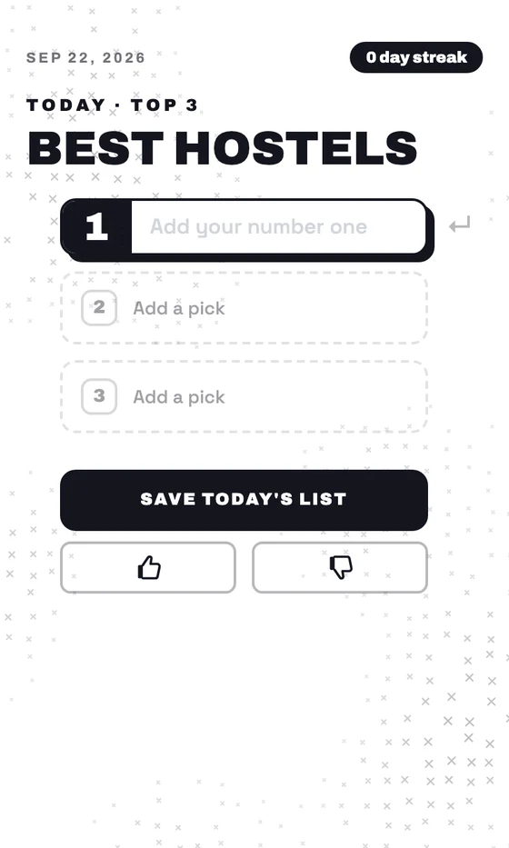
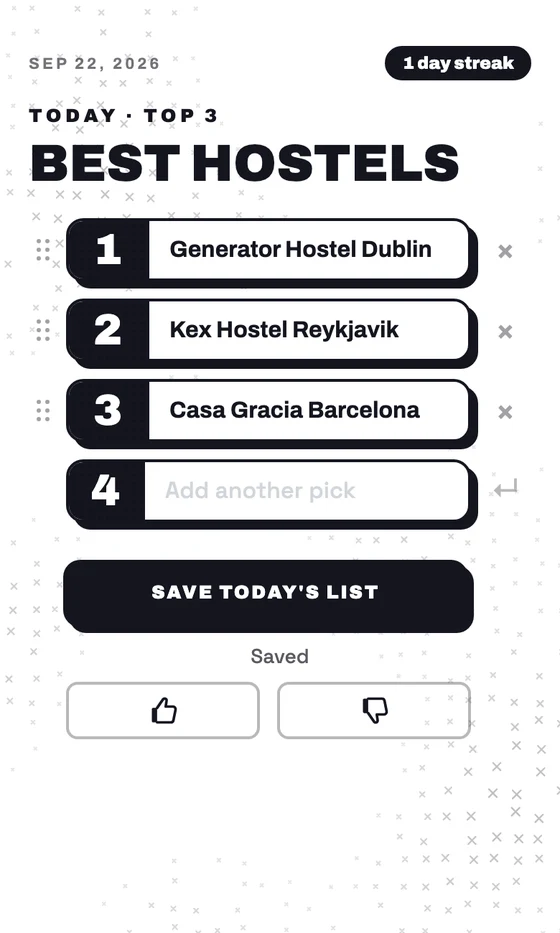
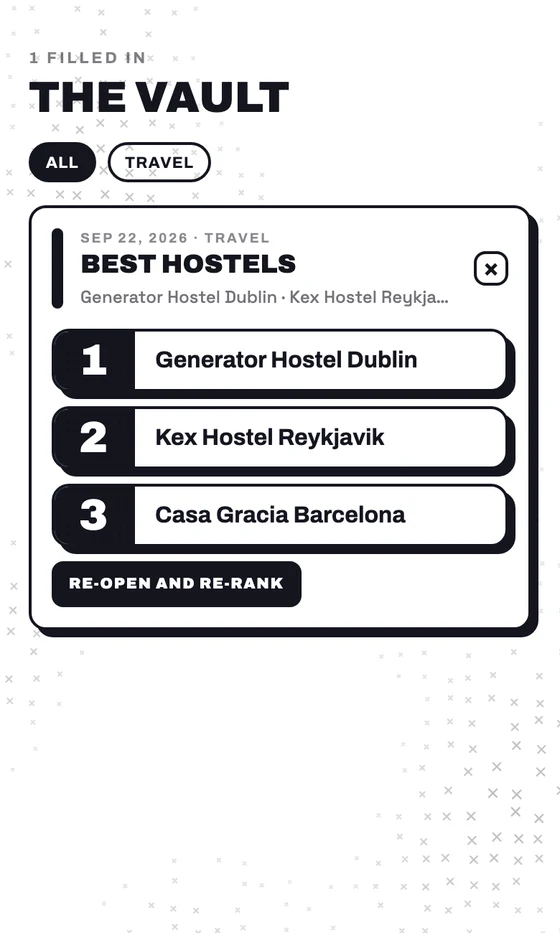
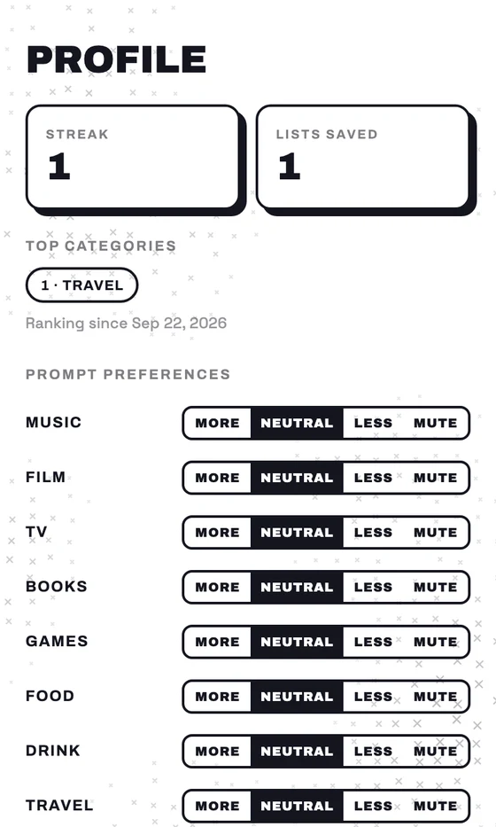

Daily Top.
In short.
A daily ranking game. Every day brings one prompt, like Best hostels, and you answer it with your top three.
Every list is kept. The Vault saves them so you can filter and re-rank, a streak counts the days, and each prompt category can be turned up, down or off.
Picking a number one takes a minute and makes you commit to an opinion. A new prompt each day gives you a reason to come back.
Try it.
How it works.

1. Meet the prompt.
Each day has one prompt. Today’s is Best hostels, with three slots waiting.

2. Rank your picks.
Type them in order and drag to reorder. A fourth slot opens if three isn’t enough.

3. Keep it in the Vault.
Saved lists collect here, with category filters. Re-open and re-rank any of them.

4. Tune your prompts.
Your profile shows your streak, lists saved and top categories. Set each of eleven categories to more, neutral, less or mute.